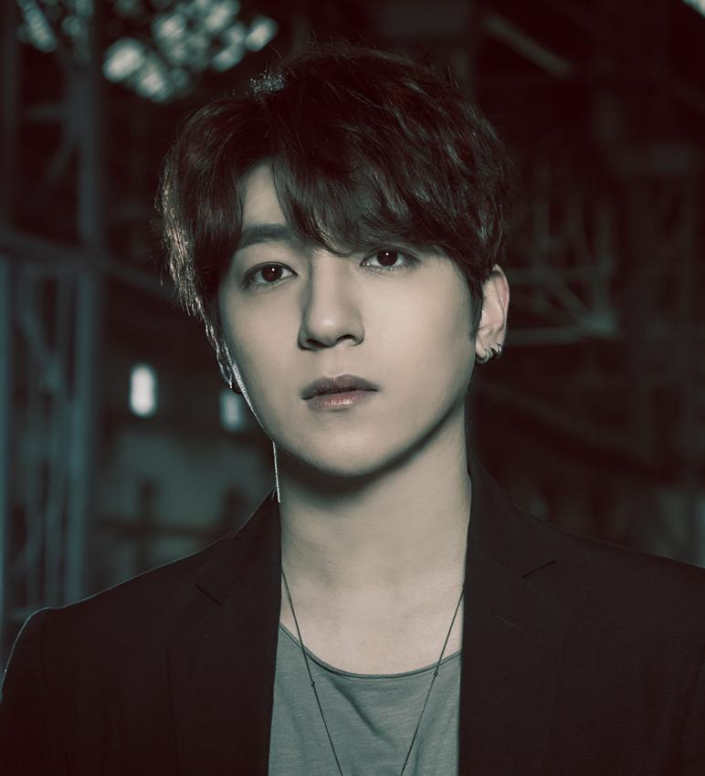

<
15054011 KimSooYoung
About DAY6



JYP엔터테인먼트의 아티스트 레이블 Studio J 소속 5인조 남성 아이돌 밴드. (왼쪽부터
Jae, 성진,
원필, 도운, Young K)
2015년 9월 7일 데뷔했으며 JYP에서 밴드 컨셉으로 나온 아티스트는 원더걸스가 처음이지만, 밴드로 데뷔한 아티스트는 DAY6가 최초.
그룹 이름은 박진영이 지었다. 방송에서 밝힌 그룹명의 의미는 5일(월~금요일)은 DAY6가 책임지고 토요일은 팬들과 함께 만들어가고 일요일은 휴무라는 뜻.
음악적 스펙트럼이 매우 넓고 특정 장르에 국한되지 않는데 이는 멤버들의 음악 취향이 확연히 달라 어떤 멤버가 참여했느냐에 따라 곡의 장르나 분위기가 달라지기 때문이다.
2집 'Daydream'부터 참여 멤버를 표시하고 있기 때문에 곡을 들으며 멤버의 조합을 확인하는 재미가 있다.
GOT7, TWICE와 함께 소속사의 새로운 세대를 이루고 있는데, 앞선 두 그룹보다 연령대가 높은 편이다. 팬덤명은 My Day
DAY6의 데뷔일은 2015년 9월 7일. 데뷔곡
'Congratulations'
youtube(DAY6)